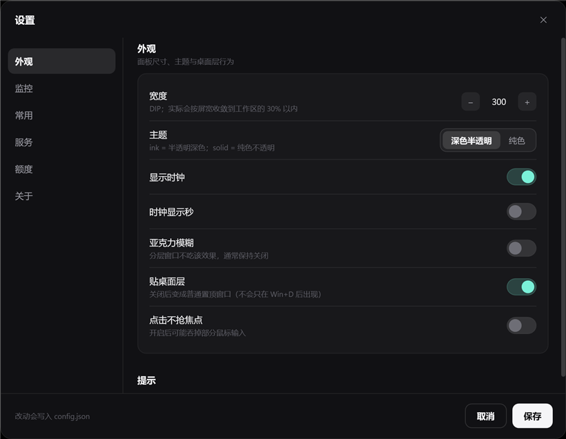
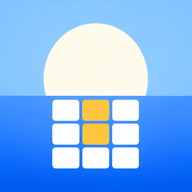

桌面开发
把系统指标、启动项和服务收进一个不抢焦点的侧栏。
-
C# / .NET 890
-
WPF / XAML85
-
Windows API80
个人主页 2026
我是一名 独立开发者
做 Windows 桌面和 Android 小工具，偏爱本地优先、不联网。
C.e1031
独立开发者 / 桌面与移动
“设计是让复杂变得理所当然。”
01 关于我
我是 C.e1031，一名常驻中国的独立开发者。做 Windows 桌面和 Android 小工具， 喜欢把复杂功能收进一个安静、够用的界面里。
我偏爱本地优先：数据留在设备上，不依赖账号和云同步。公开的项目里， DeskPanel 是贴在桌面右侧的系统侧栏，早八 是纯本地的课表， 简记 是只存在手机里的记账。
技术上主要在 C# / .NET 与 Vue 3 / uni-app 之间来回， 界面、图标、打包发布都自己来。工作之外，我拍照、跑步、读非虚构。
写信给我02 能力
从界面、代码到安装包，习惯一个人把产品做完。
把系统指标、启动项和服务收进一个不抢焦点的侧栏。
一套 Vue 3 代码跑到 Android 与 H5，数据层优先本地。
先想清楚每天会用到的动作，再决定界面长什么样。
03 作品

01 / Windows 桌面
02 / Android · 课表04 原则
能用本地数据解决的，就不放到云上；没有账号也能用。
界面、代码、图标和打包发布尽量自己走完，少一点交接损耗。
把每天都会用到的那几件事做顺，比堆功能更重要。